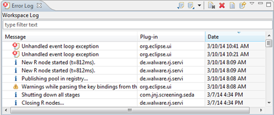
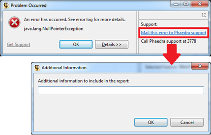

The Error Log View shows an overview of all the errors the Phaedra Application has encountered since it has started. It structures the errors in 3 classes (warnings, errors and info) and gives more information for administrators to understand the cause of a problem.
Normally, you don't need to look at the error log unless something goes wrong or doesn't work properly. An administrator may ask to see the error log to pin-point the problem.
To open the Error Log, go to Window > Show View > Other > General > Error Log

If an error is encountered, Phaedra will also pop-up a dialog. You can fill in a description of what went wrong and mail this to the Phaedra support team.
